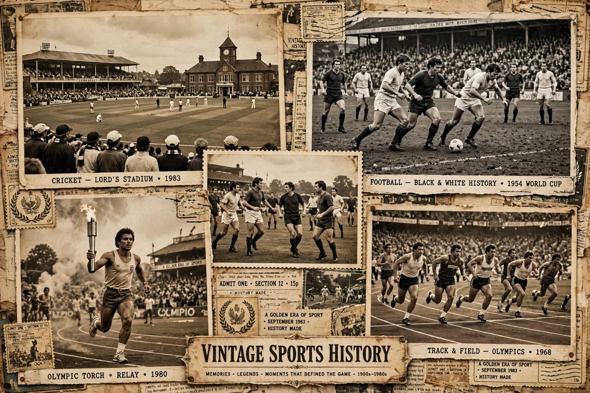
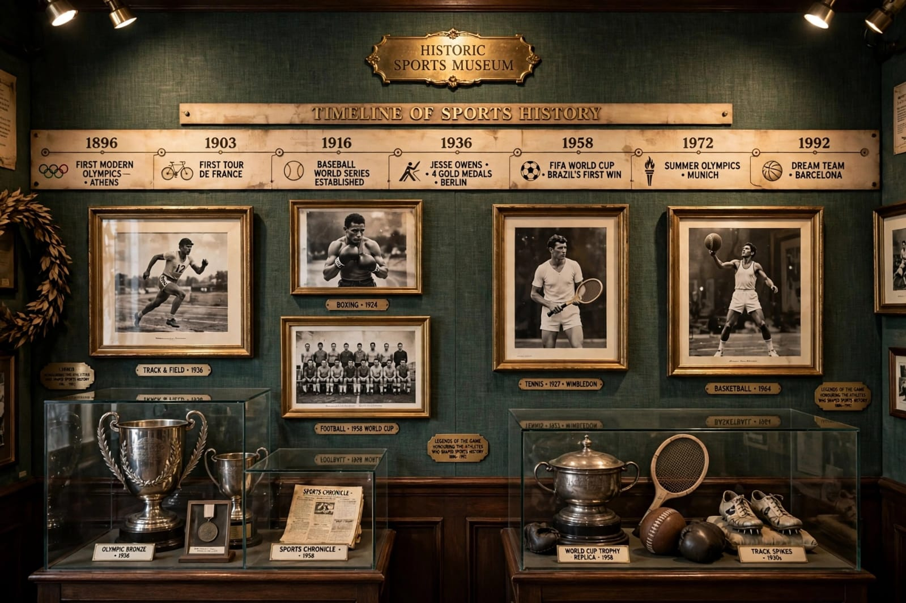
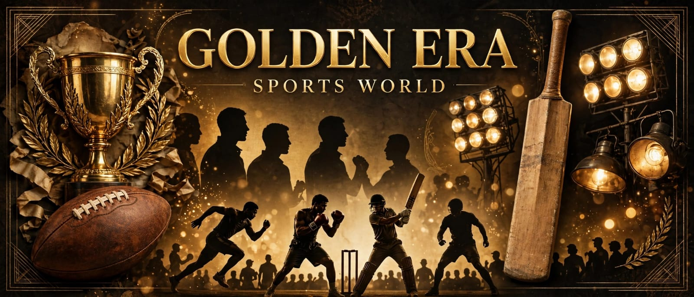

Sports have a long history. Cricket started in 16th century, Football is world's most popular game, Kabaddi is India's traditional game.
The history of sports in India features iconic moments spanning Olympic gold medals, field hockey dominance, historic cricket victories, and pioneering individual achievements.



| Year | Athlete(s) / Team | Sport / Discipline | Historical Achievement & Context |
|---|---|---|---|
| 1900 | Norman Pritchard | Athletics | India's Olympic debut; won two silver medals in 200m and 200m hurdles. |
| 1928 | Dhyan Chand & Men's Team | Field Hockey | Won India's first Olympic Gold medal in Amsterdam, beginning a golden era. |
| 1952 | K.D. Jadhav | Wrestling (Freestyle) | Won bronze at Helsinki; the first individual Olympic medal for independent India. |
| 1952 | Nilima Ghose & Mary D'Souza | Athletics | Became the first Indian women to participate in the Olympic Games. |
| 1958 | Milkha Singh | Athletics (Sprinting) | Won India's first Commonwealth Games gold (Cardiff) in the 440-yard event. |
| 1983 | Kapil Dev & Men's Team | Cricket | Won the first ICC Cricket World Cup at Lord's, fundamentally transforming Indian sports culture. |
| 1984 | P.T. Usha | Athletics (Hurdles) | Missed an Olympic bronze medal by just 1/100th of a second in Los Angeles. |
| 1996 | Leander Paes | Tennis | Won individual bronze at the Atlanta Olympics, reviving India's individual medal dry spell. |
| 2000 | Karnam Malleswari | Weightlifting | Won a bronze in Sydney; the first Indian woman to win an Olympic medal. |
| 2003 | Anju Bobby George | Athletics (Long Jump) | Won bronze at the World Championships in Paris; first Indian global athletics medalist. |
| 2008 | Abhinav Bindra | Shooting (10m Air Rifle) | Won gold in Beijing; India's first individual Olympic Gold medal. |
| 2012 | Mary Kom & Saina Nehwal | Boxing / Badminton | Part of a historic 6-medal haul in London; first Olympic medals in women's boxing/badminton. |
| 2016 | P.V. Sindhu | Badminton | Became the first Indian woman to win an individual Olympic Silver medal (Rio). |
| 2021 | Neeraj Chopra | Athletics (Javelin Throw) | Won gold at Tokyo; India's first Olympic track-and-field gold medal. |
| 2024 | Manu Bhaker | Shooting | Became the first Indian athlete post-independence to win two medals in a single Olympic edition (Paris). |
| 2025 | D. Gukesh | Chess | Received India's highest sporting honor after ascending as the youngest reigning World Chess Champion. |